This tutorial will walk you through your first GENFIRE 3D reconstruction. You will reconstruct a tomographic tilt series of a small FePt nanoparticle simulated with multislice simulation using Prismatic. You should already have GENFIRE installed, but if you have not done so you can find the installation instructions here.
First thing's first -- open the GUI. It looks like this
This is the main window for running GENFIRE reconstructions. Here you can select the filenames containing the projection images, Euler angles, 3D support and set reconstruction parameters like the number of iterations to run and the oversampling ratio (the amount of zero padding to add to the projections prior to gridding).
There are two parameters that must minimally be provided to run a GENFIRE reconstruction:
Filename containing the projection data. This can be in .mrc, .npy (numpy), or .mat (MATLAB) format as a N x N x num_projections 3D array.
Filename containing the Euler angles. These should be in a num_projection x 3 array containing columns phi, theta, psi. The file format can be .npy (numpy), .mat (MATLAB), or a plain .txt delimited by white-space.
In addition, a 3D binary support may be provided that defines a region of 1's outside of which the reconstruction is constrained to be 0. If no support is provided or the "Use default support" box is checked, a loose support will be generated automatically based upon the dimensions of the projections and the oversampling ratio. For example, if the projections are each 100x100 pixels and an oversampling ratio of 3 is used, a default support of size 300x300x300 will be created where the central 100 voxel cube is set to 1.
Here is a description of the other parameters you can adjust within the GUI. We will explore some of these in more depth later.
- Results Filename : The filename where the 3D reconstruction volume will be saved. The extension must be one of the three file formats currently supported (.mrc, .npy, or .mat). This root of this filename will also be used as a base to choose names for .txt files containing the error metrics.
- Resolution Extension/Suppression : How to apply resolution extension/suppression. More details can be found in the supplementary information of doi:10.1038/s41598-017-09847-1
- On : Apply a resolution extension step followed by suppression. This can help with noisy data.
- Off : Enforce all Fourier constraints at every iteration
- Extension Only : Apply a resolution extension but no suppression. Usually not useful.
- Number of Iterations : How many GENFIRE iterations to run before terminating.
- Gridding Method : Procedure to use for assembling the 3D Fourier grid from 2D projections. The FFT method computes the 2D FFT of each projection and assembles the grid from these values. The DFT method explicitly computes the nearest Fourier component for to each grid point and assembles from these values. The FFT method is faster but less accurate than the DFT.
- Enforce Resolution Circle : If enabled, no Fourier datapoints will be allowed to exist at frequencies beyond the Nyquist limit (these are the components near the corners of the 3D volume)
- Permit Multiple Grid-Point Matches : If enabled, allow measured data to be included in the gridding calculation of multiple Fourier grid points. When disabled, only the nearest grid point is considered a candidate. This can be useful if the data is particularly sparse.
- Oversampling Ratio : Determines the amount of zero padding to apply to the projections prior to gridding and thus determines the 3D reconstruction. The reconstruction array size will be equal to the size of each (square) projection multiplied by this number.
- Interpolation Cutoff Distance (pixels) : The limiting distances beyond which measured data will not be considered for gridding. In other words, at each Fourier grid point a sphere of this radius is drawn in K-space and only measure Fourier components that fall within it will be considered for gridding. Lower values will produce more accurately gridded voxels, but in general fewer of them.
- Constraints : Optional constraints in the reconstruction
- Positivity : Each iteration, negative reconstruction values will be set to 0.
- Support : Each iteration, reconstruction voxels not within the support region will be set to 0.
- Calculate Rfree : If enabled, 5% of the measured data will randomly be withheld from the reconstruction, and at each iteration the recovered value will be compared with the withheld one. This error is calculated both as a function of frequency and across all values and is stored in plain .txt files. Specifically, if your resulting reconstruction is stored in “results.mrc” then “results_errK.txt” contains the reciprocal space error vs iteration number, “results_Rfree_total.txt” contains the value of Rfree across all withheld datapoints for each iteration, and “results_Rfree_bybin.txt” subdivides the values of Rfree into 1-pixel thick bins and thus is a 2D array representing the value of Rfree in each bin for each iteration.Within the "data" folder is a file called "projections_FePt.mat" containing projection obtained by multislice STEM simulation. The sample is a small FePt nanoparticle containing a total of 321 atoms. GENFIRE can read projections from .mrc, .mat, and .npy files. More details about file formats can be found on the about page.
If you would like to explicitly convert the .mat file to a .npy example for doing your own analysis in Python, GENFIRE provides a convenient wrapper that can read/write between these various filetypes with ease.
# convert_extensions.py
# Basic script for converting projections from one file type to another
import genfire.fileio
filename_in = 'data/projections_FePt.mat'
filename_out = 'data/projections_FePt.npy'
arr = genfire.fileio.readVolume(filename_in)
genfire.fileio.writeVolume(filename_out, arr)This code may also be found in the "convert_extensions.py" script.
The projection data can be viewed by running the "viewprojections.py" script, which is copied here for completeness. It takes as an input parameter the filename with projections and displays them, i.e. `python3 viewprojections.py data/projections_FePt.mat`
# view_projections.py
import genfire.fileio
import matplotlib.pyplot as plt
import sys
# set default projection file if none was provided
if len(sys.argv) < 2:
file_projections = 'data/projections_FePt.mat'
else:
# verify the file exists
from os.path import isfile
file_projections = sys.argv[1]
if not isfile(file_projections):
raise IOError("File {} does not exist!".format(file_projections))
arr = genfire.fileio.readVolume(file_projections)
for i in range(arr.shape[2]):
plt.figure(42)
plt.imshow(arr[:, :, i])
plt.title("Projection #{}/{}\nPress any key to advance or click the mouse to exit".format(i, arr.shape[2]))
plt.draw()
plt.pause(1e-6) # forces figure to be rendered
if not plt.waitforbuttonpress(None):
exit(1)
Note that the tilt axis is oriented horizontally. As indicated by the title text, you can either press keys to continue displaying projections, or click a mouse button to exit. Note that clicking the "X" button won't actually exit the Python process.
To run a reconstruction, click "Select Projection File" and choose "projections_FePt.mat" with in the data folder. Next, click "Select Angle File" and choose "angles.mat". For now, set "Resolution Extension/Suppression" off (we will explore more later). Leave the other parameters default. The enormous "Launch Reconstruction" button should have turned green indicating the existing parameters appear to be okay. Note that the parameter validation routine is relatively simple and will not catch all possible mistakes in the input data format -- it is just checking that the input data is of acceptable file types.
Click "Launch Reconstruction", and wait for the iterations to complete. Each iteration, GENFIRE prints the current iteration number and the current value of the reciprocal error, which. converges to a reasonably small value if the data is good. Once the iterations are complete you will see something like this.

So the converged error was around 19%. This simulated data is aligned exactly and has no noise added, so this error is mostly due to nonlinear STEM effects and gridding errors.
The reconstruction is written out in "results.mrc". There are also three additional txt files containing various error metrics in files with names derived from that of the reconstruction. In this example they are: "resultserrK.txt" which contains the reciprocal space error vs iteration, "resultsRfreetotal.txt" which contains the value of Rfree vs iteration for all withheld values, and "resultsRfreebybin.txt" which is a numbins x num_iterations array containing the value of Rfree within each one-pixel wide spatial frequency bin across every iteration.
To view a summary of the reconstruction and these error metrics, click "Summarize Results" and choose "results.mrc". This functionality will check for the appropriately named error files and load them too, if they exist -- so if you move the error files or change their name note that they will not be useful here.
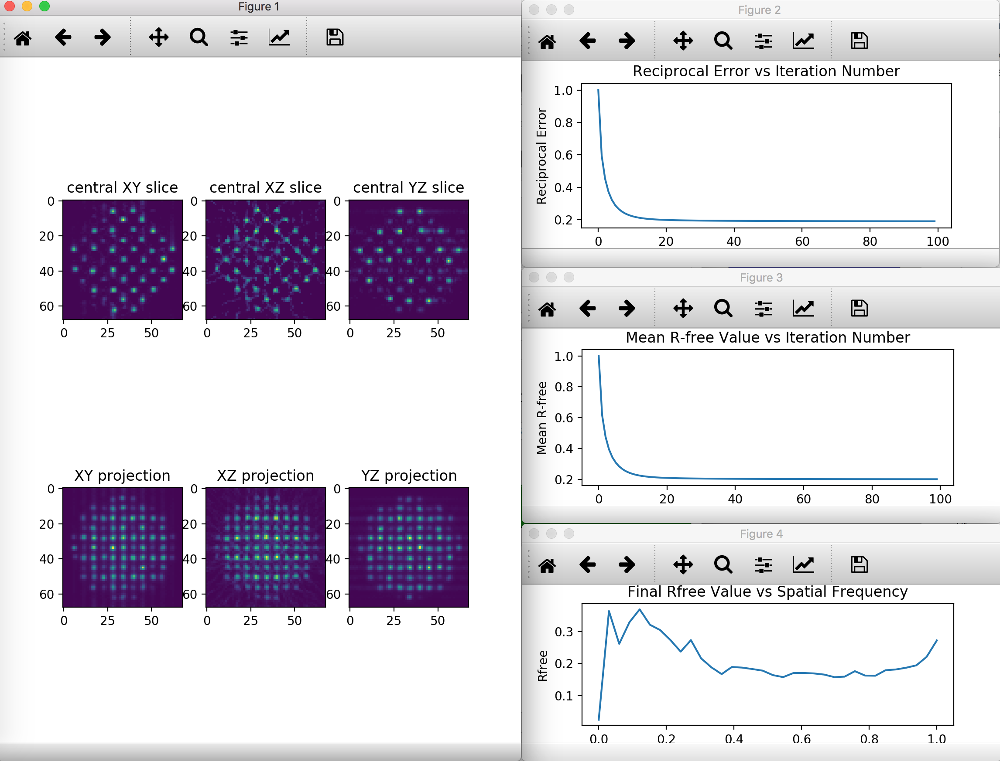
On the left is a simple visualization of the reconstruction volume showing a projection along each of the X, Y, and Z directions and the central slice of the reconstruction volume. The upper right contains the reciprocal error vs iteration, and below that is the total value of Rfree vs iteration. In general these two curves should mirror each other, with Rfree being slightly higher in magnitude. The lower right curve shows the value of Rfree as a function of spatial frequency at the final iteration. The low frequency values of this curve can be a little hard to interpret because there may be a very small number of samples (recall Rfree takes 5% of the measured values, which are already sparse). Usually one will observe that the Rfree vs spatial frequency curve slopes upward, indicating that the higher spatial frequency components are more difficult to recover.
To view the reconstruction volume slice-by-slice, select from the toolbar
View Volume -> Volume Slicerand choose the reconstruction.
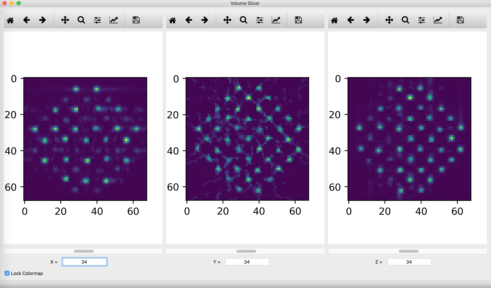
This display shows one-pixel thick slices through the volume that can be moved with the scroll bars. The "Lock Colormap" check box will freeze the current colorscaling to prevent each slice being drawn with different contrast values. This module is intended for simple screening, and there are many tools like tomviz that are better suited for in depth analysis of reconstruction volumes.
Now let's explore various ways in which different parameters or data inputs affect the reconstruction in GENFIRE.
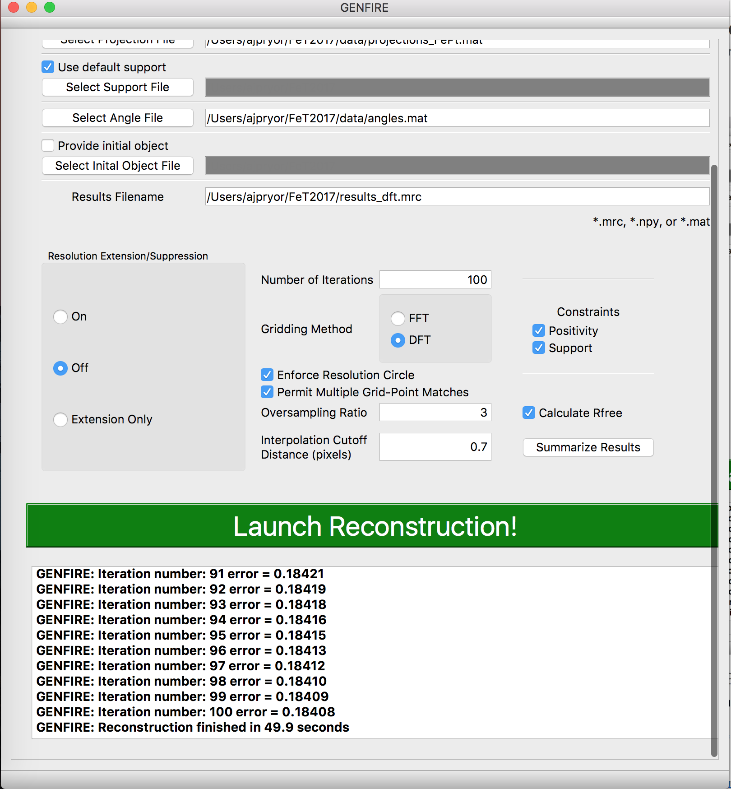
Setting the gridding method to DFT will produce a more accurate reconstruction, but will take more time. The recommended procedure is to first use the FFT gridding method for quick feedback and tuning some of the other GENFIRE parameters, and then use the DFT method at the very end to produce a final product.
The final value of the reciprocal error is several percent lower, indicating the reconstruction with DFT gridding is better. Note the time difference for gridding for DFT:

vs FFT:
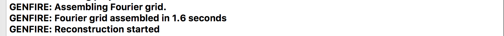
Visually, you can see improvement in the reconstruction.
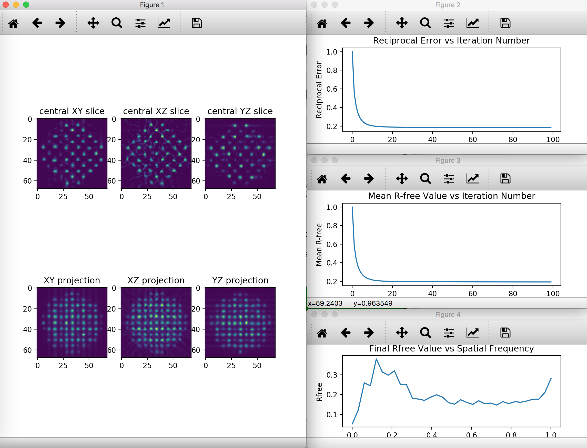
Here is the associated figure exploring DFT/FFT gridding from the GENFIRE paper. The middle panel shows the Fourier shell correlation (FSC) between a known model and reconstructions produced with DFT/FFT gridding, and the lower shows the K-error with which you are already familiar.
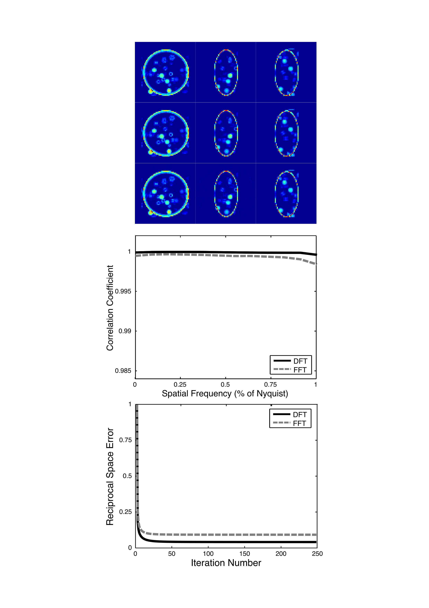
Adjusting the number of iterations to run in GENFIRE is a tradeoff between reconstruction quality and computation time. If too few iterations are run, the reconstruction does not have time to converge. However, at some point it will converge and running further iterations won't change the reconstruction very much. There's generally no negative effect of running "too many" iterations, so when in doubt run many (perhaps several hundred).
Here is an example of what can go wrong if too few iterations are run.

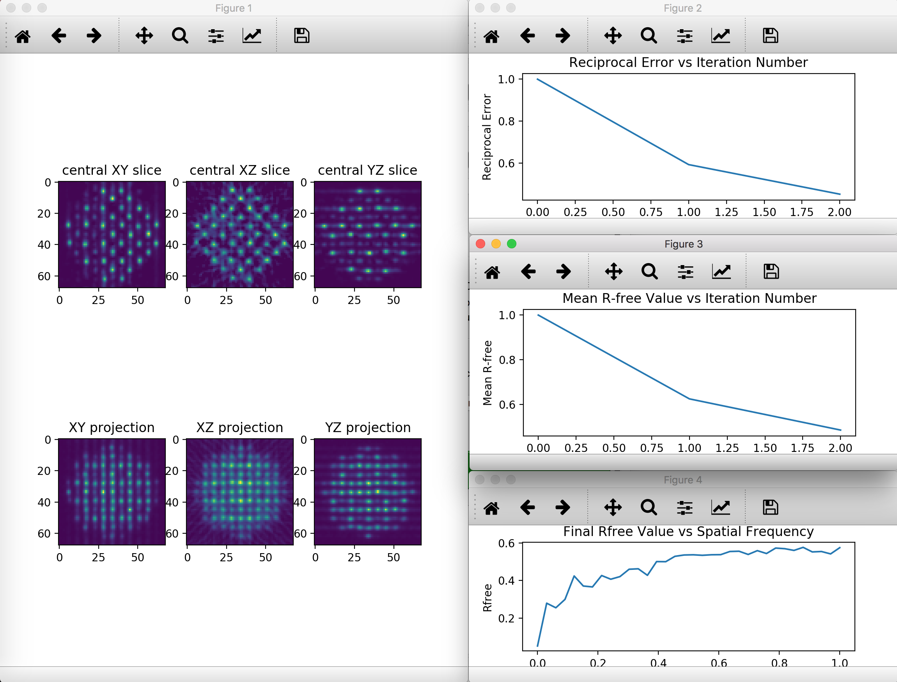
The interpolation cutoff distance determines the maximum distance (in units of reciprocal-space voxels) that measured data can be away from a given grid point and be included in the calculation of that grid point. From the set of all measured datapoints within this distance from a grid point, the gridded value is determined as an average of all the relevant Fourier components weighted by their inverse distance and divided by the sum of these weights. In this way a Fourier component that is twice as far from the grid point as a second Fourier component will be weighted half as much. For a 1D example, if a grid point F_1 located at Kx = 0 and there are measured datapoints M_1 at Kx = 0.1 and M_2 at Kx = 0.2 then
F_1 = (M_1(1/0.1) + M_2(1/0.2)) / (1/0.1 + 1/0.2)
In practice, there is also a maximum allowable weight to prevent singularities for perfectly matched grid points such as those that occur for the zero-degree projection.
If the interpolation distance is set too low, then the gridded points will be accurate but also very sparse. Here is an extreme case:

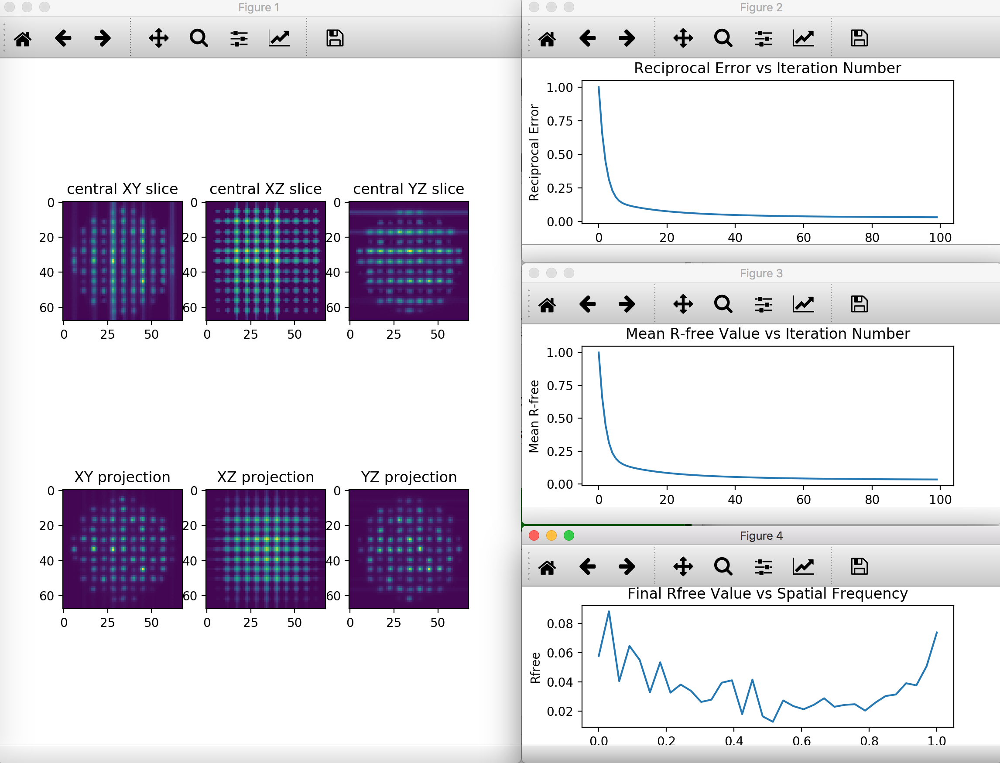
Conversely, if the interpolation cutoff distance is set too high, then the accuracy of the gridded points will suffer. The gridding process also takes longer with a larger interpolation distance as more measured data is included in the computation. In this case the gridding with the (very large) interpolation distance of 2.5 took 194s even with the FFT method compared to < 2s with the default parameter.


A few comments. The interpolation distance can be tuned extensively, but if you are unsure it is better to err on the side of too large than too small. Better yet, just use the default parameters. Note that in the high interpolation cutoff case the reciprocal error converges extremely quickly. This is because there are more measured datapoints in reciprocal space, and thus the Fourier constraint is stronger which accelerates convergence. The interpolation cutoff is measured in units of reciprocal pixels, and thus it is couples to the oversampling ratio. If the oversampling ratio is decreased, the same value of the interpolation cutoff distance results in a less accurate gridding. Here we decrease it to 2 (this parameter is discussed more later).

Particularly in the top-middle panel, you can observe significant artifacts.
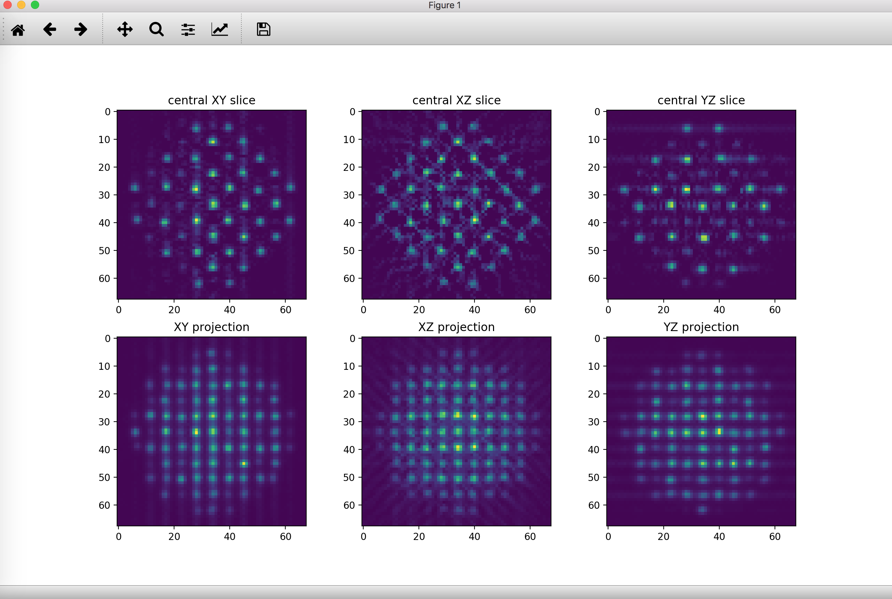
The oversampling ratio determines the amount of zero-padding that is added to the projections prior to gridding and reconstruction. Adding this zero region increases the pixel sampling in reciprocal space, and this finer sampling results in more accurate gridding at the cost of a larger array size, which requires more RAM and more computation time. Usually, this parameter should be at least 3, and more is better. Using an oversampling ratio of 2 will produce a fairly poor reconstruction that resembles the true structure but contains artifacts.
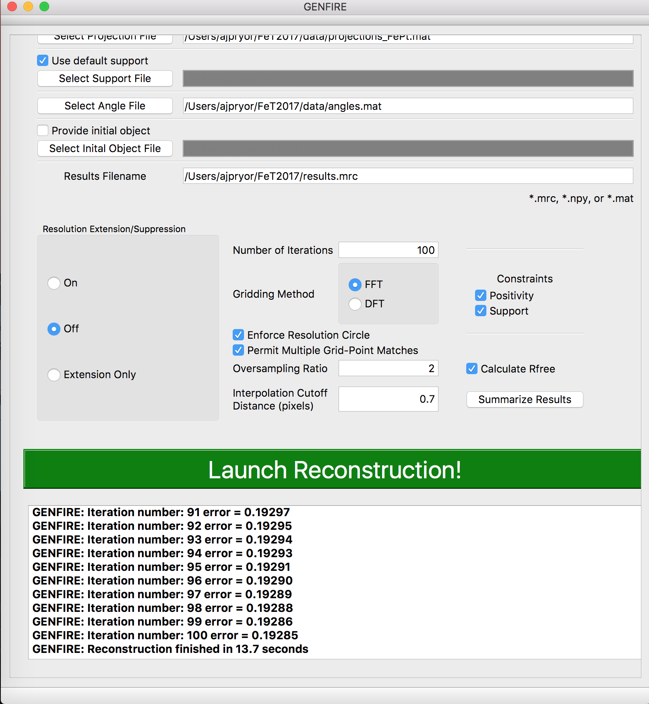 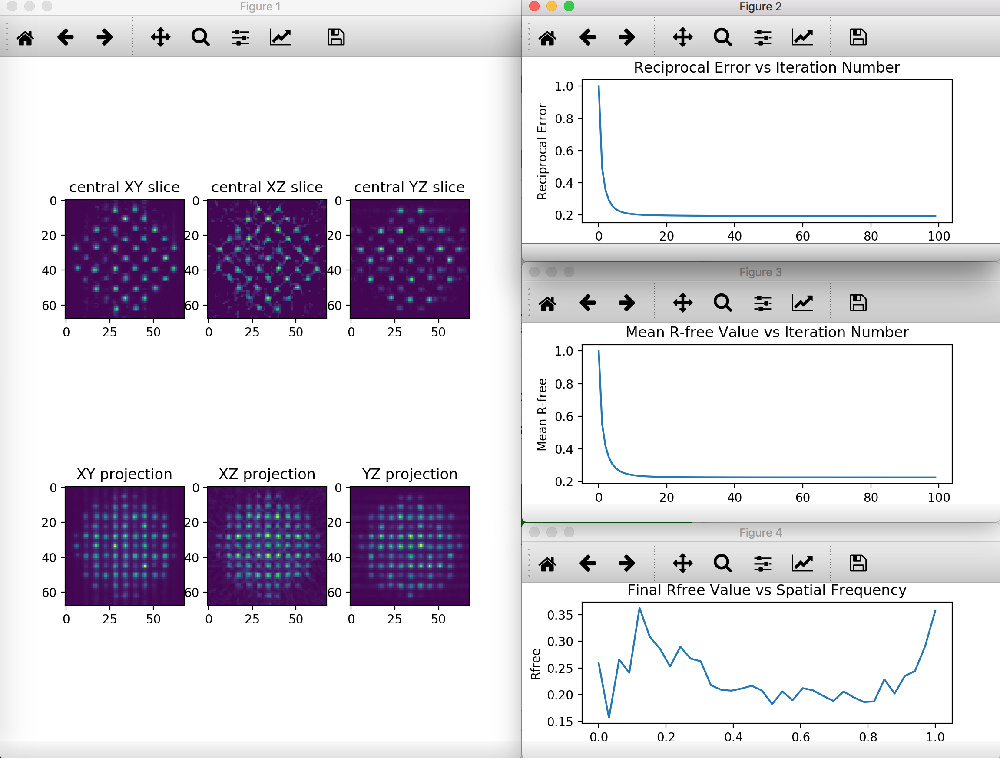
A higher oversampling ratio of 5 will take longer to complete (275s vs 13s in this case) and require more RAM, but will produce a reconstruction with lower reciprocal error and highest fidelity.
 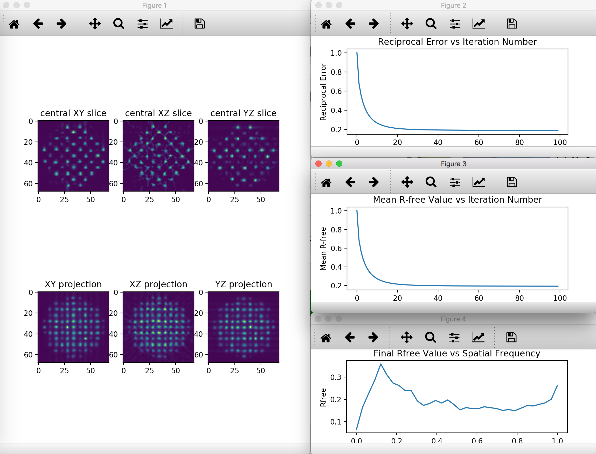
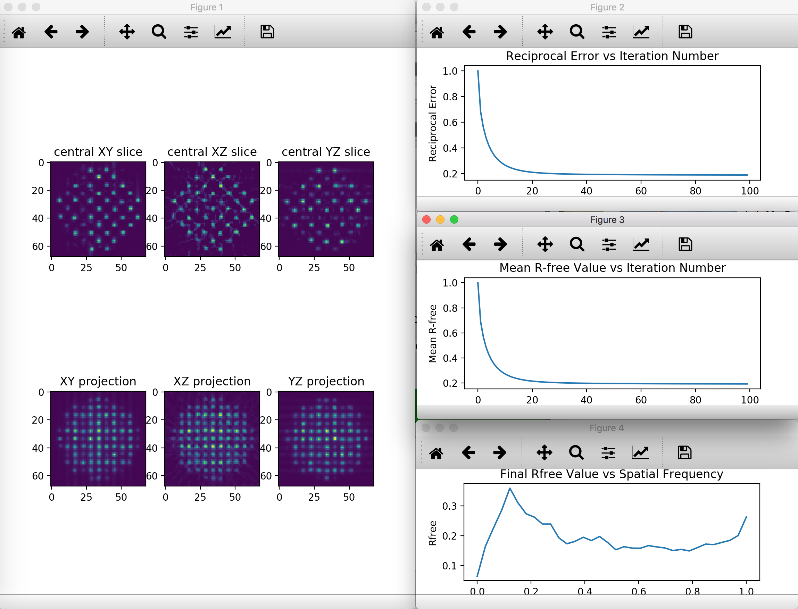
As a reminder, the interpolation cutoff distance is coupled to the oversampling ratio, so if you increase the oversampling ratio be aware that the size of a pixel in reciprocal space changes.
Unlike 3D phase retrieval, in tomography the projections have phases. An unfortunate side-effect of this is that each projection can have an independent translational shift that must be corrected in order to get a good reconstruction. For this reason, projections must be aligned prior to reconstruction. There are many ways to accomplish this alignment including (nonexhaustively):
1. Center of mass alignment - fix the center of mass of the sample to the center of the projection image
2. Cross correlation alignment - works for a single-tilt axis dataset by projecting each 2D projection to a 1D curve on the rotation axis. This curve should ideally be constant across the whole tilt series.
3. Fiducial markers - seed the sample with a distribution of small particles that are then used to align
4. Orientation refinement - using a preliminary reconstruction, improved orientations may be found for the input projections followed by a second reconstruction. This process may be repeated in an iterative fashion until alignment converges.To demonstrate this, I applied random translational shifts to each projection in the X and Y distribution (drawn from a normal distribution with mean 0 and standard deviation 1 that was rounded). We can view them to observe the misalignment.
python3 view_projections.py data/projections_FePt_misaligned.matAnd then reconstruction them


We can see that misalignment can signifcantly affect the reconstruction. The K-error is much higher and the reconstruction quality is significantly affected. Tracing atoms from such a reconstruction becomes quite difficult, and when combined with a missing wedge (discussed next), we can see that alignment is one of the most important steps in high-resolution 3D image reconstruction.
Due to a number of factors such as thickness effects or stage geometry, high tilt angles are often unaccessible experimentally. The result is a "missing wedge" of unmeasured Fourier space that introduces artifacts in the reconstruction do to anisotropic sampling.
To simulate this, the projection files appended with "_misaligned" contain only projections with tilt angles of +- 50 degrees.
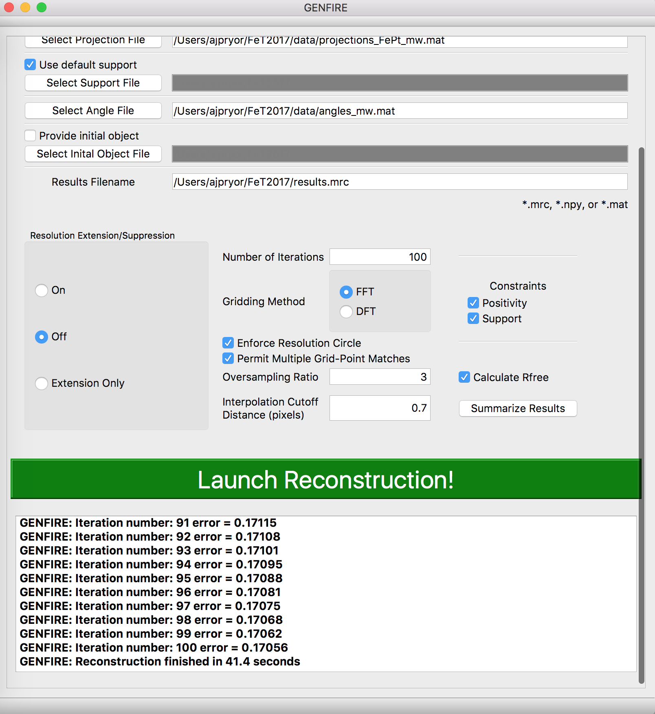
Be aware the K-error is not negatively effected by the presence of a missing wedge; in fact it decreases. This is because the Fourier constraint is weaker. By now you hopefully can see that the K-space error is useful for monitoring convergence and comparing reconstructions produced under similar conditions but does not tell the whole story.
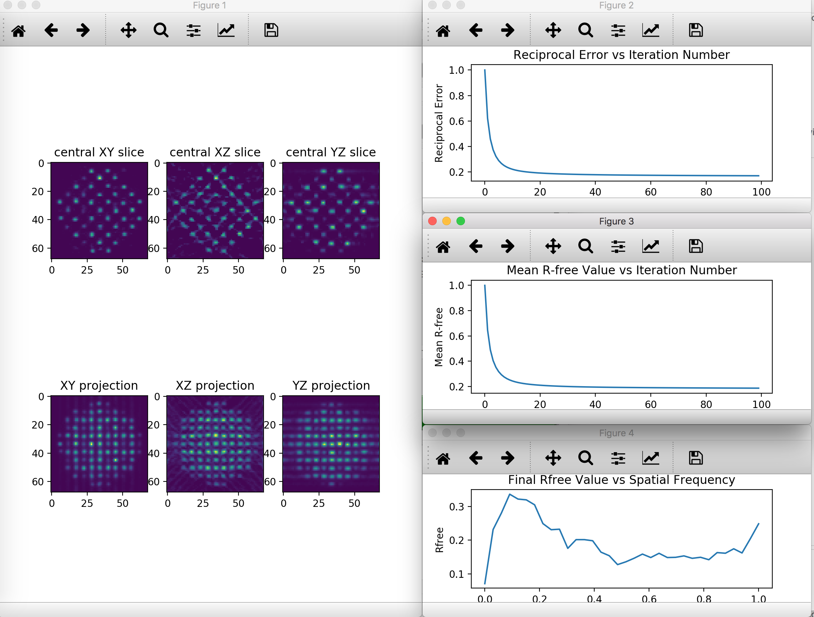
Zooming in on the images...

The missing-wedge artifacts are most obvious in the top-middle panel. The tilt axis for these simulations is along the y-axis (the theta Euler angle), and in this geometry the zero-degree projection lies in the XY plane. If you focus on the XZ slice, the rotation axis goes into/out of the page and the zero-degree position of the stage corresponds to the horizontal direction. This stage is then tilted +- 50 degrees and thus the vertical line at theta=90 is maximally unmeasured. The result of this geometry is the X-shaped artifacts you observe at approximately +-50 degree angles. Also, note that the atoms are distorted in the left-right direction relative to the vertical. In reality, the atoms are isotropic, and this distortion is entirely due to the missing wedge.
The presence of noise degrades the reconstruction and introduces artifacts. The severity of this degradation is related to the severity of the noise, and correspondingly you should expect to observe increased error metrics and decreased visual reconstruction quality as the noise level is increased. One potential way to deal with noise is described in the next section.
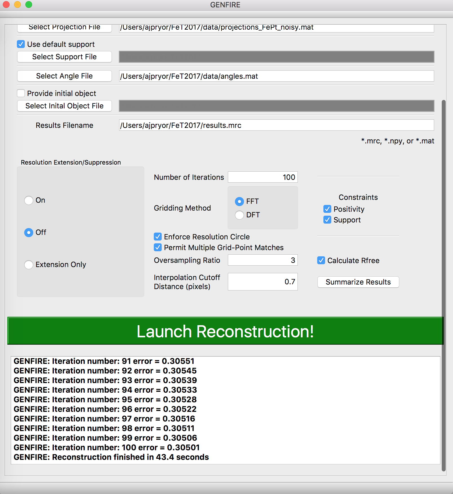 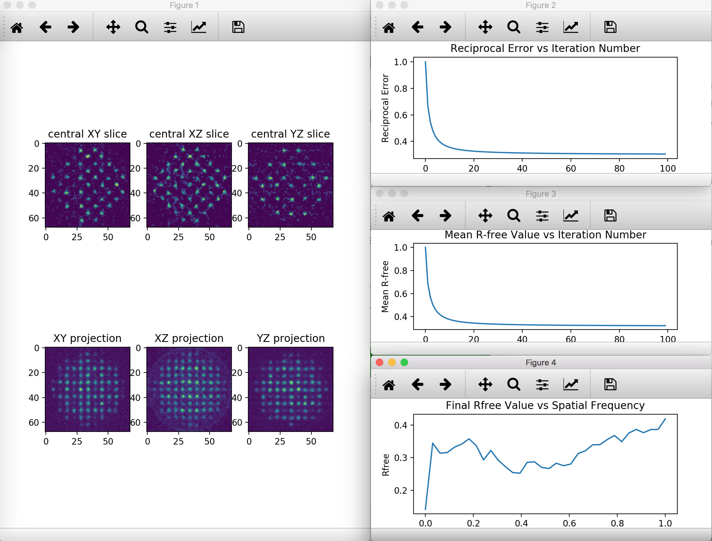
Resolution extension/suppression is a technique that changes the Fourier constraint over the course of the reconstruction iterations in a way that is intended to help with noise. For the first few iterations, only the lowest (and least noisy) spatial frequency reciprocal grid points are enforced. This resolution "cutoff" is then expanded outwards so that gradually higher and higher spatial frequency information is enforced. This continues until halfway through the total number of iterations, at which point all measured data is enforced. The process is then run in reverse and the cutoff relaxed until for the final iterations once again only the lowest spatial frequency information is enforced. The logic is explained in detail in the GENFIRE paper, but essentially the idea is to exploit the fact that SNR changes as a function of spatial frequency in a way that almost always results in more noise affecting the higher frequencies. By removing the noisier, high frequency components at the end of the reconstruction it is allowed to evolve in a way that can benefit the reconstruction.
Let's try a reconstruction with resolution extension/suppression
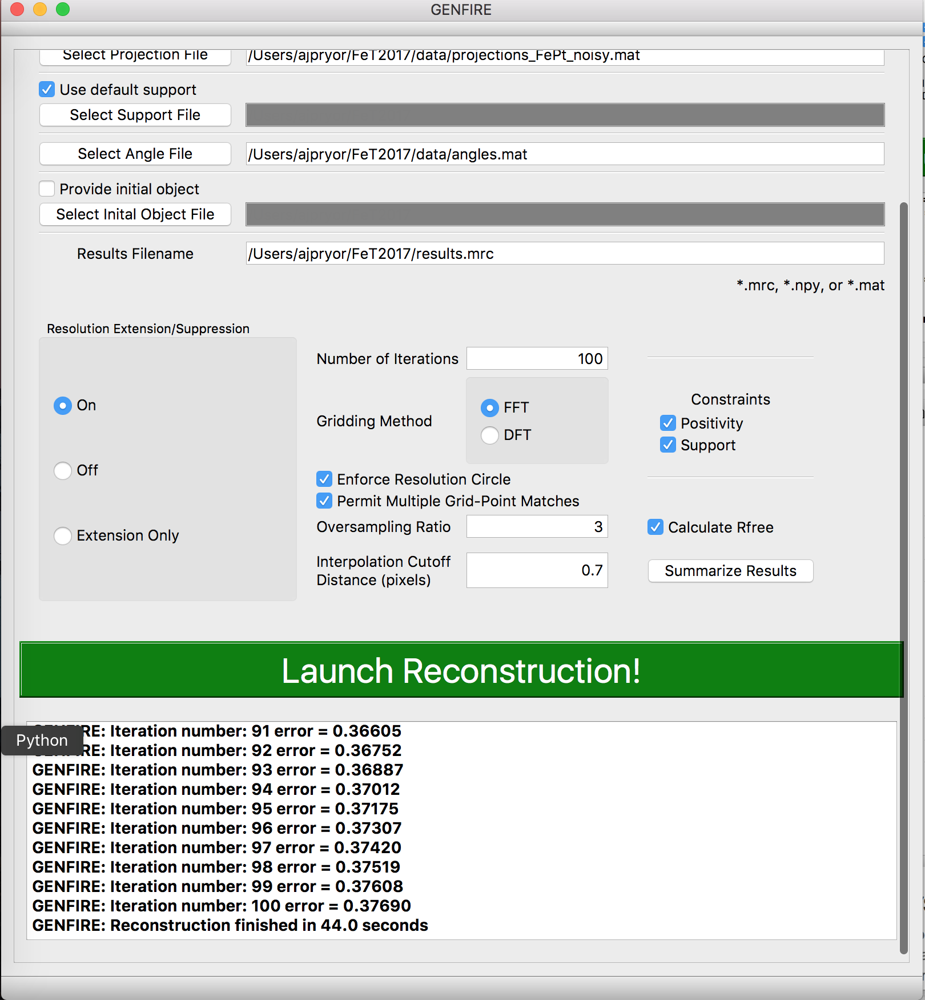

Notice some funny business happens with the K-error -- it goes up quite a bit. The presence of noise decreases the correctness of the measured values, so a perfect reconstruction would still demonstrate significant error by this metric. The claim is that the resolution extension technique changes the reconstruction in a way that is more faithful to the true structure despite deviating from the measured data at high frequencies. This claim is supported by the relevant figure from the GENFIRE paper.

Although a loose support will get you pretty far with GENFIRE, a tight support provides a stronger constraint. Often, we will run obtain a preliminary reconstruction with a loose support and then use that reconstruction to create a tighter support, perhaps by smoothing and thresholding. To show how we might do that, we will explore the make_support.ipynb Jupyter notebook.
Don't worry if you have never used Jupyter notebooks -- you can ignore this part. However, they are an extremely popular and useful technology, and it is a good idea to at least be aware of their existence.
You can install and start jupyter notebooks with
pip3 install jupyter-notebookThen navigate to the folder with the rest of the code for this tutorial and type
jupyter notebookThis will launch a local web server that is running the Jupyter client. From here you can open make_support.ipynb
Here we move over to the Jupyter notebook and create a support and then save it to "tightSupport.npy"
Now let's run a reconstruction with this support. 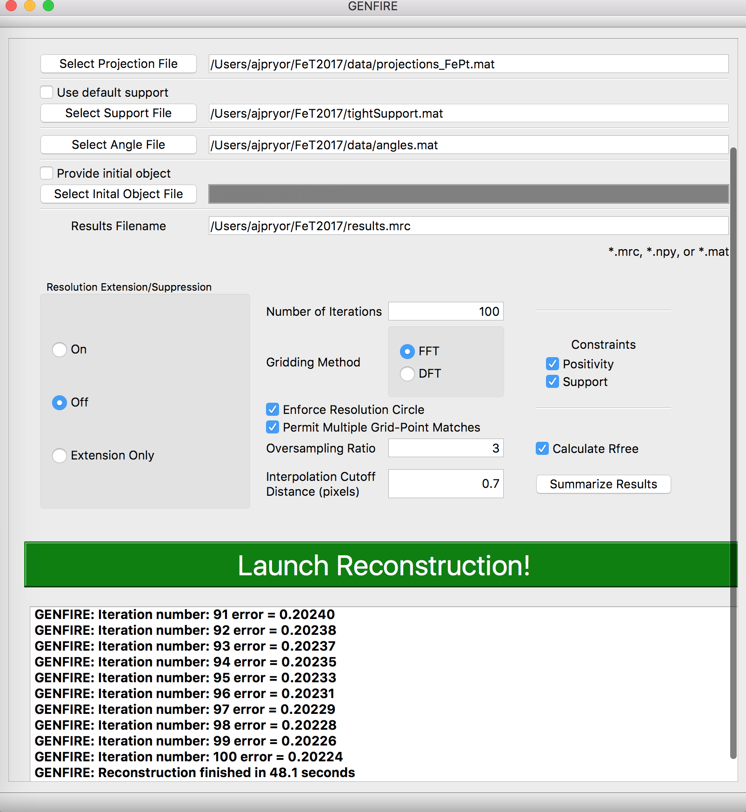

The reciprocal error increases with a tighter support, and this is because a tight support is a stronger constraint in real space. By the convolution theorem, applying a binary mask in real space convolves K-space with the Fourier transform of the support, which conflates Fourier components.
It's also worth noting to that familiar with phase retrieval in coherent diffraction imaging (CDI) that the support constraint in a GENFIRE is not nearly as critical to the reconstruction as in CDI. The difference is in 2D CDI one has a near-complete set of Fourier magnitudes with no phases, whereas in 3D GENFIRE reconstructions there is a sparse sampling of datapoints that do have phases. The presence of phase information, particularly at low resolution, in GENFIRE will usually establish the boundary of the object successfully even without a tight support.
GENFIRE also has functionality for simulating linear projections for a model. We will now demonstrate this and for the sake of diversity will use a noncrystalline sample.
First we have to create a simulated dataset so that we have something to work with. For that we can use the projection calculator, which can be accessed from a drop-down menu at the top of the screen:
Projection Calculator -> Launch Projection CalculatorYou should now have a blank instance of the projection calculator, like this:
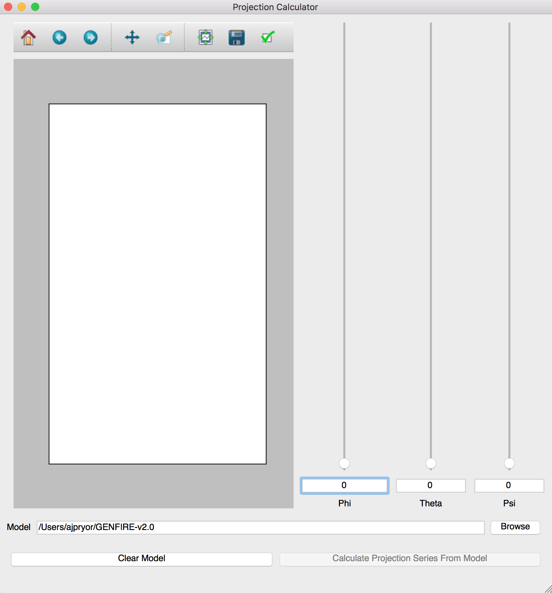
Now we need to select a 3D model. Click Browse, find "vesicle.mrc" in the data directory of the GENFIRE source code, then click open. You will be prompted to select an oversampling ratio. The oversampling ratio controls the amount of zero padding applied to the model -- specifically the oversampling ratio is the total array size divided by the size of the object. The purpose of this zero-padding is to increase the accuracy of the projection calculation. The tradeoff is that larger oversampling ratios mean the array size is bigger, and, therefore, slower. I find that an oversampling ratio of 3 is a good choice. Click OK, and GENFIRE will load the model, pad it, compute the 3D FFT, and construct a linear interpolator. Once finished projections may be calculated relatively quickly.
Once loaded the zero-degree projection of the model will appear in the display.

At this point you can adjust the Euler angles to explore what different views of the
model look like. Note that these are projection images, not surface renderings. If you
are new to tomography, take a moment to explore how the projection images change as you
adjust the angles, in particular theta. This can give you some really nice intuition as
to how 3D information is encoded in the 2D projection series.
Once you are ready, calculate a projection image dataset from this model by clicking "Calculate Projection
Series from Model"

From this dialog you can specify the Euler angles for each of the calculated projections. To accomplish this you have two options.
Provide the Euler angles as a space-delimited .txt file where each row corresponds to one projection and provides the Euler angles as phi theta psi. If you are confused about this format you can view the outputted file with option 2 to see an example. Note there is no limitation on the angles for GENFINRE like there are in many single-axis tomography reconstruction techniques, so you can use whatever you'd like.
Specify a single-axis tilt series. Specify the tilt angle, theta, as start = 0, step = 2, stop = 180 to calculate 91 equally spaced projections with no missing wedge. Choose an output filename for the projection, make sure "Save Angles" is checked, then click "Calculate Projections" to perform the calculation.

The calculation runs in the background on a separate thread. Once it is finished you will hopefully see a success message like this
Note that the file created containing the Euler angles is the same name as the corresponding projections with "eulerangles" appended, in case you want an example of how to format your own angle files.
For now, we will just use the default reconstruction parameters (more detail is given on them HERE). Verify that the filenames of your data are correct, then start the reconstruction by clicking the enormous green button.

You can now view the error curves and a simple visualization of the results by clicking "Summarize Results" and selecting the file corresponding to "Results Filename". This file contains the reconstruction volume, and there are also some .txt files that are generated with a common root name. These .txt files contain the error curves for the reciprocal error and Rfree. Specifically, if your resulting reconstruction is stored in "results.mrc" then "resultserrK.txt" contains the reciprocal space error vs iteration number, "resultsRfreetotal.txt" contains the value of Rfree across all withheld datapoints for each iteration, and "resultsRfree_bybin.txt" subdivides the values of Rfree into 1-pixel thick bins and thus is a 2D array representing the value of Rfree in each bin for each iteration.

What's all this, you ask?
The left figure shows projection images of the reconstruction along the 3 principal axes and central slices. You'll be able to visualize the volume more closely in a moment. The top error curve plots the total reciprocal error vs iteration number. This is the R-factor between the FFT of the reconstruction and the entire constraint set. By default the reconstruction is performed using resolution extension/suppression, so for the early iterations only the lowest resolution constraints are enforced, but the error is still compared to all constraints so there are dips each time the constraint set is updated. This style of constraint enforcement is useful for noisy data -- here we have a noiseless simulation so you won't see much difference in the reconstruction if you turn it off.
The middle and bottom curves summarize the results for R-free. GENFIRE implements a modified version
of the concept of R-free from X-ray crystallography. First, the constraint set is divided up into
bins (10 by default). In each spatial frequency bin, 5% of the values are withheld from the reconstruction.
At each iteration, the R-factor is calculated between the voxels in reciprocal space and these withheld values.
The purpose of this is a metric for prevention of overfitting to the data. Low values of R-free indicate
that recovered values for missing datapoints match the (withheld) input data, and by extension
suggests confidence in reconstructed values where there is no measured datapoint to compare.
The middle curve shows the mean value of R-free across all resolutions at each iteration. For clean
data it will generally mirror the reciprocal error curve. The bottom curve shows the value of R-free for
each spatial frequency bin at the final iteration. It generally increases with spatial frequency. For this
noiseless simulation the values are quite low, but for noisy data R-free will be higher. It is important
to remember that high values of R-free are not necessarily bad, they simply mean there is difference between
the recovered and measured reciprocal-space data. For noisy data this may be what you want, as resolution
extension/suppression can act as a denoising technique. However, R-free will also be high if your data
is not good. This illustrates the importance of considering multiple metrics when drawing conclusions about
your results. Remember - "Garbage in, garbage out".
To explore your reconstruction, open the Volume Slicer
Volume Slicer -> Launch Volume Slicerand select your results.

Here you can view individual layers of your reconstruction (or any volume) along the 3 principal directions. You can also use this module to view your calculated projections.
Hopefully this tutorial has been helpful. Happy reconstructing!